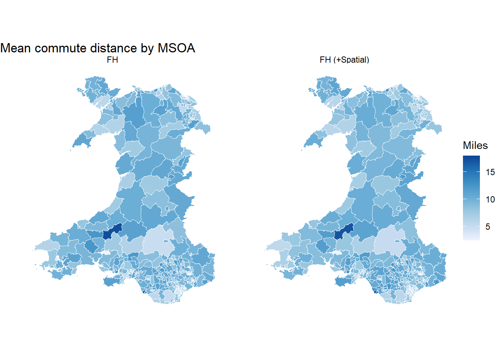

The Fay-Herriot (FH) model for area-level estimation improves direct estimates that are too noisy, unstable, or unavailable for some areas by borrowing strength from area-level covariates and the spatial structure.
1 Understanding the Fay-Herriot Model
The Fay-Herriot model is an area-level small area estimation model. It combines two sources of information for each estimation area:
the direct survey estimate for the estimation area; and
The shrinkage weight \(\gamma_d = \frac{\sigma_u^2}{\sigma_u^2 + \psi_d}\) controls how much the final estimate relies on the direct estimate versus the model prediction. It uses the sampling variance \(\psi_d\) and the between-area unexplained variance \(\sigma_u^2\).
If \(\psi_d\) is small, the direct estimate is precise, so \(\gamma_d\) is closer to 1 and the FH estimate stays close to the direct estimate.
If \(\psi_d\) is large, the direct estimate is noisy, so \(\gamma_d\) is closer to 0 and the FH estimate is pulled more strongly toward the model prediction.
If \(\sigma_u^2\) is large, there are strong unexplained differences among areas, so the FH estimate gives more weight to the direct estimate.
If \(\sigma_u^2\) is small, unexplained area differences are weak, so the FH estimate is pulled more strongly toward the model prediction.
2 Covariates
SAE improves precision by borrowing strength from auxiliary variables. Covariates can often be found through census data and other population-level aggregate statistics.
Good covariates should have:
Coverage: each covariate should be available for all estimation areas.
Alignment: geography, definition, and reference period should match the survey indicator.
Relevance: variables should have a clear substantive link to the outcome.
Predictive value: covariates should improve area-level prediction and be easy to explain.
3 Spatial Structure
The basic Fay-Herriot model usually assumes that unexplained area effects are independent after accounting for covariates. In urban research, this assumption is often unrealistic because nearby areas may share infrastructure, socio-demographic profiles, transport conditions, or other contextual features.
A spatial Fay-Herriot model relaxes this independence assumption by allowing unexplained area effects to be spatially related. One way to express this is:
\[
u = \rho W u + \eta
\]
where:
\(u\) is the vector of unexplained area effects;
\(W\) is a spatial weights matrix describing which areas are neighbours;
\(\rho\) controls the strength of spatial dependence;
\(\eta\) is the remaining non-spatial random variation.
The most common approach is contiguity-based adjacency, where two areas are neighbours if their boundaries touch.
Example of spatial weight matrix by adjacency
Warning
The spatial weights matrix is a modelling assumption. It should be checked carefully, especially for islands, coastal areas, or fragmented geographies, because isolated areas or unusual neighbour links can strongly affect spatial smoothing.
4 Bayesian Area-Level SAE
In small-area estimation, Bayesian and frequentist approaches differ in how unknown quantities such as \(\beta\), \(\sigma_u^2\), and \(\gamma_d\) are estimated and how uncertainty is interpreted.
In the frequentist approach, unknown quantities are estimated as fixed unknowns. Typical outputs are point estimates, RMSEs, and confidence intervals.
In the Bayesian approach, unknown quantities are assigned prior distributions and updated using the observed data. Typical outputs are posterior means, credible intervals, and probability summaries.
The difference in uncertainty treatment between Bayesian and Frequentist approaches
In this workbook, we focus on the Bayesian approach because posterior uncertainty is often easier to communicate in policy settings and more useful for decision-making.
5 Practical tutorial
In this workbook, we fit Bayesian area-level FH models for the mean commute distance among commuters by MSOA estimand using the indicator commute_distanceusing the SUMMER R package.
Code
library(dplyr)library(readr)library(stringr)library(tidyr)library(sf)library(ggplot2)library(survey)library(SUMMER)library(spdep)# Load analysis-ready data into a temp folderzip_tmp <-tempfile(fileext =".zip")url <-"https://raw.githubusercontent.com/shaunhoang/tutorial-site/main/data/tutorial-clean-data.zip"download.file(url, zip_tmp, mode ="wb")unzip(zip_tmp, exdir =tempdir())base_path <-file.path(tempdir())# Load Census files into a temp foldercensus_zip_tmp <-tempfile(fileext =".zip")census_url <-"https://raw.githubusercontent.com/shaunhoang/tutorial-site/main/data/tutorial-census-data.zip"download.file(census_url, census_zip_tmp, mode ="wb")unzip(census_zip_tmp, exdir =tempdir())census_path <-file.path(tempdir())# Load shapefiles for plottingboundary_zip <-tempfile(fileext =".zip")boundary_url <-"https://raw.githubusercontent.com/shaunhoang/tutorial-site/main/data/tutorial-boundaries.zip"download.file(boundary_url, boundary_zip, mode ="wb")unzip(boundary_zip, exdir =tempdir())msoa_boundaries <-st_read(file.path(tempdir(), "boundaries", "boundaries-msoa.geojson"),quiet =TRUE) |>rename(domain_id = MSOA21CD) |>filter(str_starts(domain_id, "W"))msoa_domains <- msoa_boundaries |>st_drop_geometry() |>select(domain_id) |>arrange(domain_id)
5.1 Load Indicator
Load the commute_distance indicator file. This indicator is continuous and is defined among respondents with a valid commute distance.
The direct estimate is recreated here so the Bayesian FH model receives the direct estimate and its sampling variance in the format expected by smoothArea().
With all the components ready, we can now proceed to fitting a Fay-Herriot model on our estimates. For smoothArea(), we need to standardise the direct estimates. After fitting, the FH estimates are transformed back to the original reporting scale, and we can also extract the posterior variance, and 95% credible interval for each MSOA.
Note
For smoothArea(), the direct-estimate input must have the domain ID in the first column, the direct estimate in the second column, and the sampling variance in the third column.
Mapping the fitted estimates, we see that the direct estimates vary sharply across Wales, while the FH model pulls many areas toward values supported by the covariates and the overall area-level distribution.
The reason for this drastic shrinkage is easier to see when the estimates are ranked by the direct estimate and shown with their original uncertainty intervals. Areas with wide direct-estimate confidence intervals contribute less direct survey evidence, so their FH estimates are pulled more strongly toward the model prediction.
FH also provides estimates for areas without any direct survey estimate. These estimates come from the covariate relationship learned from areas with direct estimates and the estimated between-area variation.
The non-spatial FH model borrows strength from covariates and the overall distribution of MSOAs, but it does not use the fact that MSOAs are geographically connected. For transport outcomes, this independence assumption may be unrealistic. We therefore fit a spatial FH model as a sensitivity extension. It asks whether allowing neighbouring MSOAs to have similar unexplained area effects changes the estimates or their uncertainty.
First, we create a spatial weights matrix using queen contiguity, where two MSOAs are neighbours if they share either a boundary segment or a point.
We can now compare the FH estimates before and after spatial information to see whether adding adjacency changes the estimates or uncertainty enough to matter.
Code
commute_comparison <- commute_comparison |>left_join(spatial_fh_est_commute, by ="domain_id")fh_spatial_compare_map <- msoa_boundaries |>left_join(commute_comparison, by ="domain_id") |>select(fh_mean, spatial_fh_mean, geometry) |>rename(`FH`= fh_mean,`FH (+Spatial)`= spatial_fh_mean ) |>pivot_longer(c(`FH`, `FH (+Spatial)`), names_to ="method", values_to ="estimate")ggplot(fh_spatial_compare_map) +geom_sf(aes(fill = estimate), colour ="white", linewidth =0.05) +facet_wrap(~method) +scale_fill_distiller(palette ="Blues", direction =1, na.value ="grey85") +labs(title ="Mean commute distance by MSOA", fill ="Miles") +theme_void()

In this example, the spatial model does not cause a major shift. This suggests that most of the improvement over direct estimation comes from covariates and general FH shrinkage, while the added adjacency structure has limited additional influence for this estimand.
5.6 Validation
In practice, we usually do not have a true area-level value to validate SAE estimates against; if we did, there would be no need to use SAE! However, for this tutorial, UK Census 2021 provides an external benchmark for commute distance, so we can use it to check how close the FH estimates get to an independent area-level measure.
That said, census data is binned into categories and in kilometres. Therefore, we first use category midpoints to approximate the benchmark mean commute distance for each MSOA, then convert kilometres to miles to match the FH estimates.
Code
benchmark_commute_distance <-read_csv(file.path(census_path, "census2021-ts058-msoa.csv"),show_col_types =FALSE) |>filter(str_starts(`geography code`, "W")) |>transmute(domain_id =`geography code`,benchmark_commute_distance = (`Distance travelled to work: Less than 2km`*1+`Distance travelled to work: 2km to less than 5km`*3.5+`Distance travelled to work: 5km to less than 10km`*7.5+`Distance travelled to work: 10km to less than 20km`*15+`Distance travelled to work: 20km to less than 30km`*25+`Distance travelled to work: 30km to less than 40km`*35+`Distance travelled to work: 40km to less than 60km`*50+`Distance travelled to work: 60km and over`*75 ) / (`Distance travelled to work: Less than 2km`+`Distance travelled to work: 2km to less than 5km`+`Distance travelled to work: 5km to less than 10km`+`Distance travelled to work: 10km to less than 20km`+`Distance travelled to work: 20km to less than 30km`+`Distance travelled to work: 30km to less than 40km`+`Distance travelled to work: 40km to less than 60km`+`Distance travelled to work: 60km and over` ) *0.621371 )
Then we will plot the direct and (spatial) FH estimates against the benchmark.
Compared with the direct estimates, the FH estimates align much more closely with the benchmark. However, the FH estimates still show clusters of underestimation and overestimation, with many MSOAs sitting below or above the parity line. By mapping the difference, we see a spatial pattern in these ‘errors’:
Rural long-distance commuting is underpredicted
Urban commute distance is overpredicted
There may be omitted covariates that capture more than spatial proximity.
This suggests that the current FH model does not fully capture the urban-rural structure of commute distance. Candidate covariates could include rural-urban classification, employment accessibility, local job density, or distance to major employment centres. Covariate selection therefore needs to happen as a separate parallel workflow before fitting the final FH model. This process is iterative and should also reflect domain knowledge about the outcome and the geography.
That said, when visualised together on a graph, the benchmark values seem to fall within the 95% FH credible intervals for many areas, lending confidence in the fitted model’s uncertainty intervals.
The SAE workflow starts by extracting the direct estimates and their sampling variances for the estimation areas. The Fay-Herriot model then uses area-level covariates to adjust the final estimates: Areas with precise direct estimates remain close to their observed values. Areas with noisy or missing direct estimates borrow more strength from the model. Finally, the spatial Fay-Herriot model adds one further assumption: neighbouring MSOAs may share similar unexplained patterns after accounting for covariates.
In this example, adding covariates drastically improved the estimates, though adding spatial structure does not. This suggests that most of the improvement comes from the covariates and general FH shrinkage rather than from spatial smoothing.